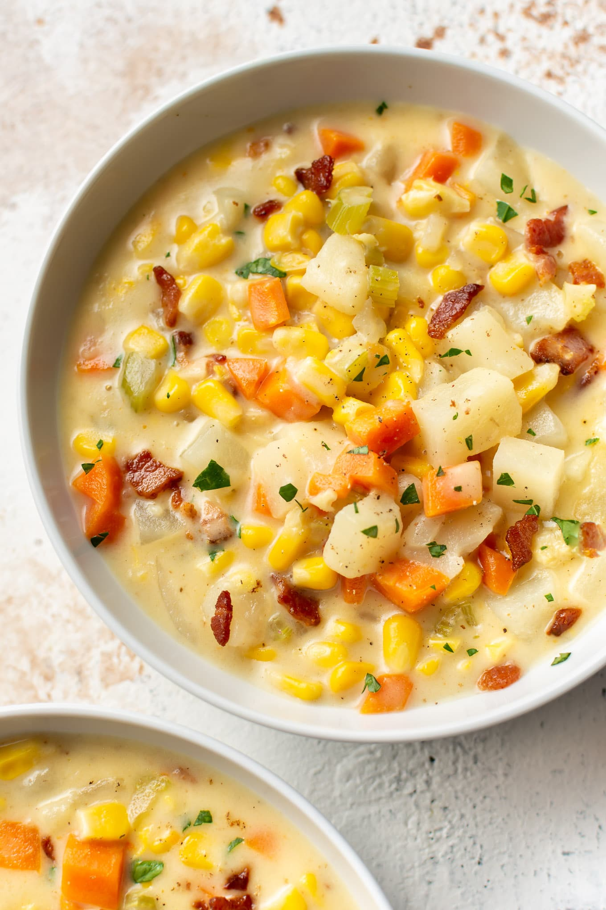

Corn Chowder

Description
Corn Chowder is a chowder soup prepared using corn as a primary ingredient. Basic corn chowder is usually made up of corn, onion, celery, milk or cream. and butter.
Other ingredients that feature additionally might include potables or squash, salt pork, gish, seafood, and chicken.
Ingredients
- Corn
- Potatoes
- Carrot
- Celery
- Onions
- Bacon
- Chicken broth
- Milk
- Cream
- Cayenne Pepper
Steps
- Sautee bacon in a dutch oven until crisp and flat. Remove bacon to a plate
- Sautee vegetables(onion, celery and carrot) in the bacon grease until softened.
- Add potatoes and corn kernels and season with salt, pepper and cayenne pepper.
- Add corn stock into the pot and simmer until potatoes are tender.
- Serve in warm bowls garnished with bacon and chives.
Return to main page